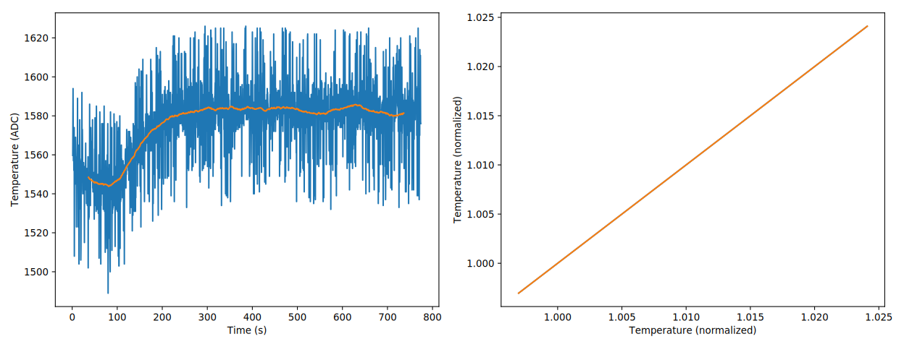
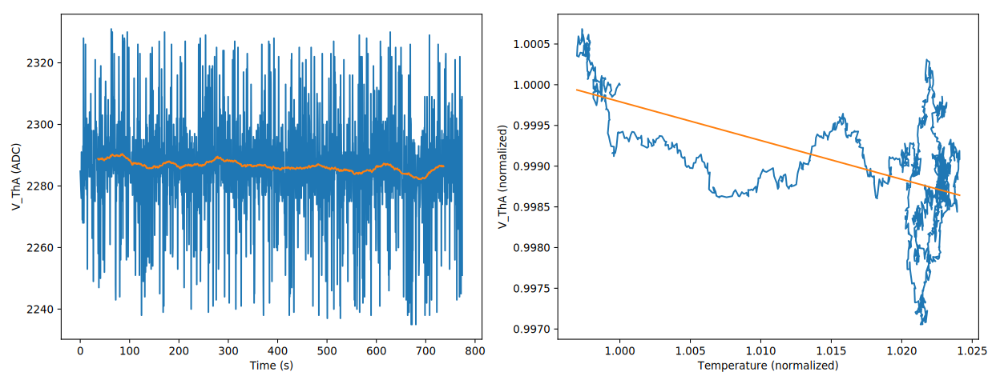
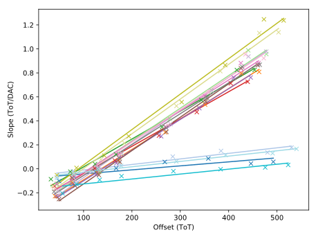
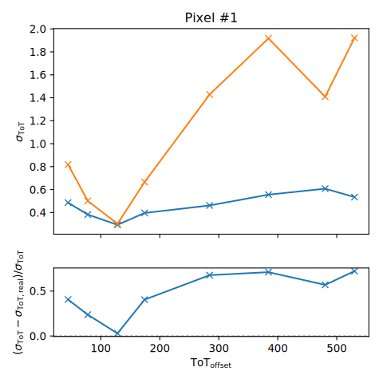
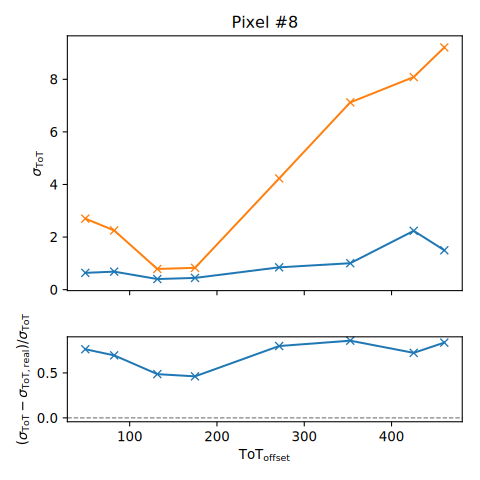
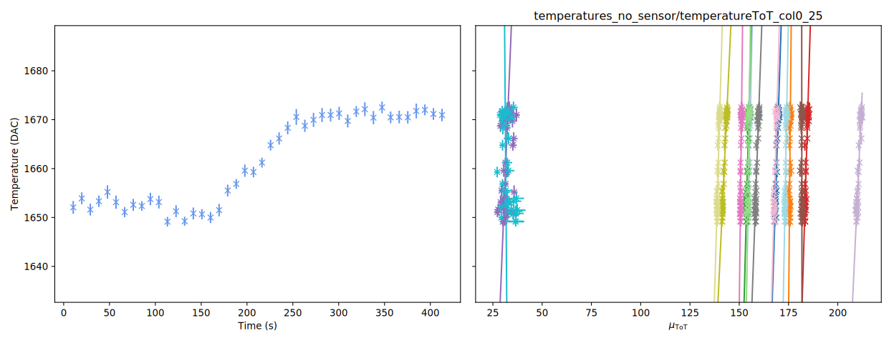
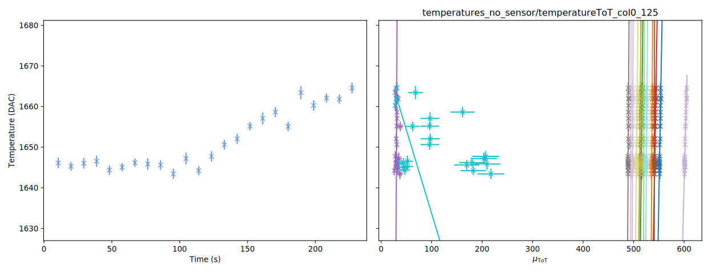
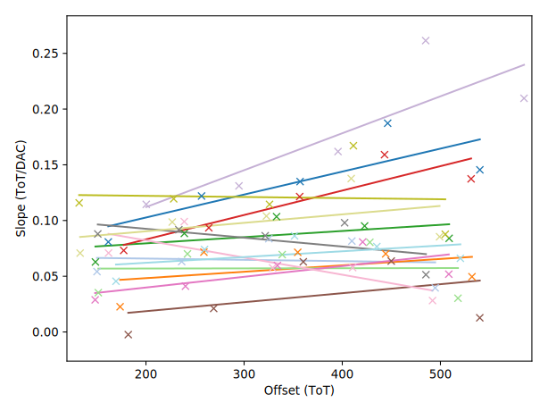
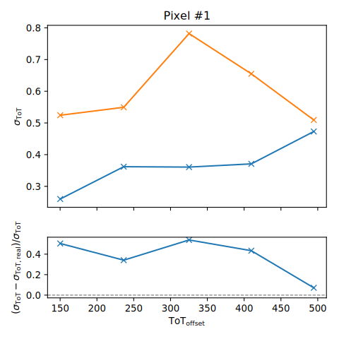
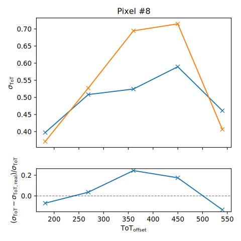

class: center, middle, inverse # Temperature dependence ### 3rd July 2018 --- ## Measurement of Voltages - Possibility to set ADC-out on Dosepix to various internal voltages - Voltages are converted to digital with an ADC and read out via the µC - Allows tracking the progression of a voltage (or multiple voltages at once) as a function of time - E.g. temperature <p style="text-align:center;"></p> On the right-hand side: - measured voltage as a function of temperature - axes are normalized to first measured value --- ## V_ThA - Temperature was varied like shown in the previous plot <br>(currently no conversion from ADC to Temperature `\(\rightarrow\)` needs calibration!) - Voltage of the threshold for ToT measurements - Usually set via equalization <p style="text-align:center;"></p> --- ## V_cascode_bias - Cascode bias voltage for the periphery DACs - Linear relation of voltage and temperature - Unable to change voltages via periphery DACs, but able to supply constant voltage externally <br> `\(\rightarrow\)` Method to get rid of temperature dependence? Test! <p style="text-align:center;"><img src="images/V_cascode_bias.svg" alt="Temperature" width="800px" align="middle"/></p> --- ##Temperature calibration - Different method to get rid of temperature dependence `\(\rightarrow\)` Calibration! - First, need to set temperature which is stable against: - V_ThA to get below noise level - jumps of V_ThA due to the sawtooth-nature of the voltage - Disadvantage: sensitivity for low energy photons is lost - Idea: Measure ToT as a function of the temperature and adjust accordingly --- ## ToT Measurements - DPX-Board is put into a box to heat itself - For a quasi constant temperature, generate multiple test pulses for a single pixel column and measure the mean ToT values for each pixel - Perform described measurement for multiple temperatures - Mean ToT value varies linearly with the temperature But... <p style="text-align:center;"><img src="images/temperatureToT_25.svg" alt="Temperature" width="800px" align="middle"/></p> --- ## ToT Measurements (Part 2) Slope changes drastically with the test pulse energy (and therefore mean ToT)! - Need to also perform measurements for different mean ToT values - Later, want to find function to transform measured ToT value and temperature to ToT value at a certain temperature `\(T_\mathrm{norm}\)` (here: 1570 ADC, indicated by blue dashed line) - Describe each linear function for the pixels by two parameters: - Offset: point of intersection with `\(T_\mathrm{norm}\)` on `\(\mu_\mathrm{ToT}\)`-axis - Slope <p style="text-align:center;"><img src="images/temperatureToT_125.svg" alt="Temperature" width="800px" align="middle"/></p> --- ## Pixel parameters - Previously defined parameters seem to show almost linear dependency (needs more and more precise measurements to validate) - Clearly visible: the four small pixels in the column <p style="text-align:center;"></p> --- ## ToT Correction Correct ToT values via the following formula `\( \mathrm{ToT}_\mathrm{corr}(\mathrm{ToT},\, T) = -\frac{(T_\mathrm{norm} - T)t + \mathrm{ToT}}{(T_\mathrm{norm} - T)m - 1}, \)` with: - `\(t\)` - the offset - `\(m\)` - the slope --- ## Standard deviation comparison - For the different measurements (various mean ToT values), get standard deviation of the pixel slopes, i.e. the deviation with temperature - Correct the ToT values with the previously described method and get the standard deviation again - Compare values by calculating their residual --- ##Standard deviation comparison (Pixel #1 - small) <p style="text-align:center;"></p> --- ## Standard deviation comparison (Pixel #8 - large) <p style="text-align:center;"></p> --- ## Measurements with a DPX without a sensor <p style="text-align:center;"></p> - 14 of 16 pixel show similar behaviour - The remaining 2 are misfits --- ## Sensorless: High energy <p style="text-align:center;"></p> - Same measurement but with larger test pulse charge - Again 14 of 16 pixels look similar - One of the misfits remains almost constant with the temperature, but stays at a low ToT value - The other misfit shows no systematic behaviour --- ## Sensorless: Pixel Parameters - Misfits are omitted - Remaining pixels all show similar behaviour and have only slight slopes <p style="text-align:center;"></p> --- ## Sensorless: Pixel #1 (small) <p style="text-align:center;"></p> --- ## Sensorless: Pixel #8 (large) <p style="text-align:center;"></p>